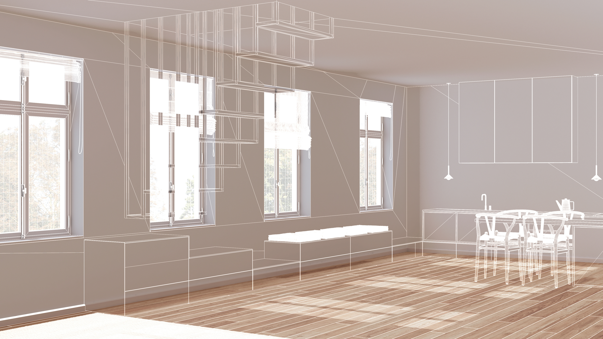
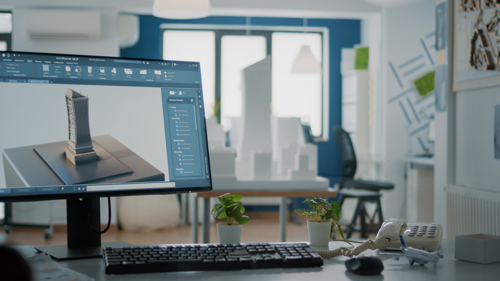

Soluciones integrales en diseño, consultoría, supervisión y modelado 3D para proyectos residenciales, comerciales e institucionales.
VER SERVICIOS
Desarrollo de propuestas funcionales y estéticas adaptadas al contexto costarricense. Incluye conceptualización, anteproyecto, modelado preliminar y análisis espacial.

Asesoría profesional en normativa, optimización de espacios, materiales, procesos constructivos y viabilidad técnica del proyecto.

Acompañamiento profesional para garantizar calidad, cumplimiento de planos, control de acabados y coherencia estética durante la ejecución.

Creación de modelos tridimensionales precisos para presentación, análisis y desarrollo de proyectos. Ideal para visualizar espacios antes de construir.
Cada proyecto se desarrolla mediante un proceso estructurado que garantiza claridad, calidad y cumplimiento técnico en todas las etapas.
Conversamos sobre tus necesidades, objetivos y expectativas para definir el alcance del proyecto.
Realizamos mediciones, recopilamos información y analizamos el contexto para una propuesta precisa.
Desarrollamos ideas iniciales, distribución de espacios y lineamientos estéticos del proyecto.
Construimos el diseño arquitectónico completo, planos, detalles y modelado 3D.
Acompañamos el proceso constructivo para asegurar calidad, cumplimiento y correcta ejecución.
Conversemos sobre tus ideas y encontremos la mejor solución arquitectónica para tu espacio.
Contáctame